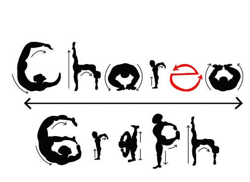

I am ready to work with programmers around
the world to make my dreams and the dreams of
others a technological reality. I have been
looking for ways to integrate my love for technology
with my other talents for years. I have done extensive
learning and refining of the tools to launch my goals forward.
As of now, my coding knowledge lies within these realms:
Interactive Software for Choreographers

An app made for choreographers, by choreographers. With the app in its current state, you should be
able to log in, access your dashboard and a few choreographic works. As of now, all you can do is
view the steps for pieces you are authorized to see. This app was made using postgres for backend data,
and express, react, javascript, html, and css for the client side app.
Centralized Donation Platform
DonationHub is a collarborative effort used as a way to centralize the efforts community champions (donators) need in order
to best serve their communities. By using the DonationHub website, users are able to locate organization near them, browse
items that location needs, and give as they please accordingly.
Language Learning Resource
A collaboratice effor desifned for user to learn a new language utilizing spaced repetition, a learning technique in which more challenging
words are shown more frequently and words that had their answers guessed correctly are shown less frequently.